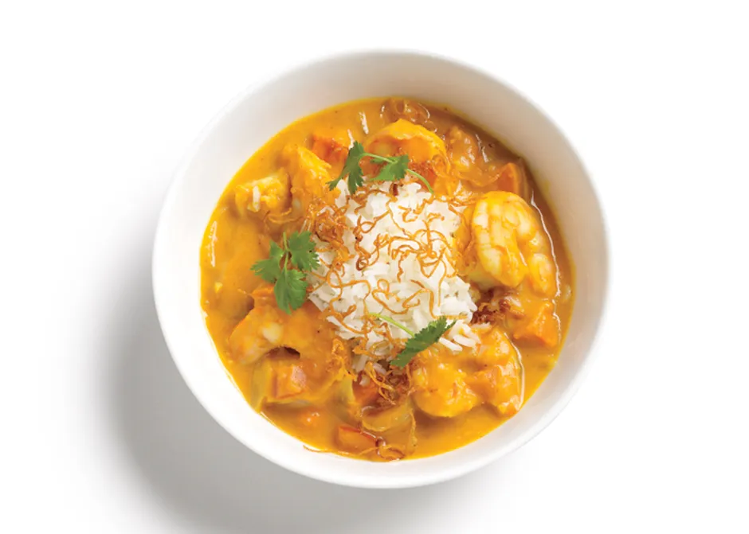

Pumpkin Shrimp Curry

If you think pumpkin is bland, this shrimp curry recipe exists to prove you wrong.
Deliciously, happily, bowl-lickingly wrong.
Ingredients
4 Servings
- 2 tablespoons olive oil
- 1 cup sliced onion
- 1 tablespoon minced garlic
- 1 plum tomato, chopped
- 1 15-ounce can pumpkin purée
- 2 cups vegetable broth
- 1 cup unsweetened coconut milk
- 1 1/2 teaspoons curry powder
- 1 /8 teaspoon cayenne pepper
- 1 cup butternut squash, roasted and diced
- 1 pound shrimp, peeled and deveined
- 1 1/2 teaspoons fresh lime juice
- Steamed Rice
- Cilantro
- Lime zest
- Fried Shallots
Steps
- Heat olive oil in a large saucepan over medium heat
- Add onion and ginger; sauté until soft, about 8 minutes
- Add garlic; cook for 1 minute
- Stir in plum tomato and pumpkin purée; cook, stirring frequently,
until pumpkin is golden brown, about 10 minutes
- Add vegetable broth, coconut milk, curry powder, and cayenne pepper;
simmer for 20 minutes
- Add butternut squash, shrimp, and lime juice
- Simmer until shrimp are cooked and squash is warm
- Serve with steamed rice. Top with cilantro, lime zest, and fried shallots